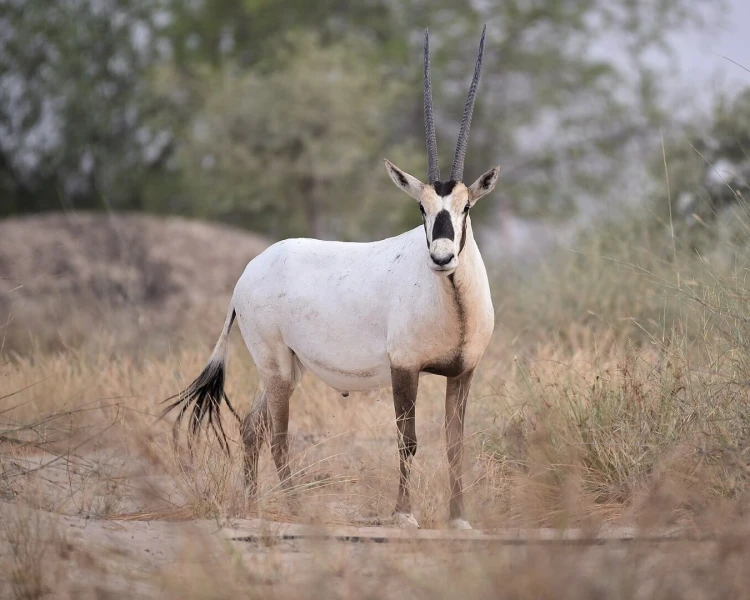
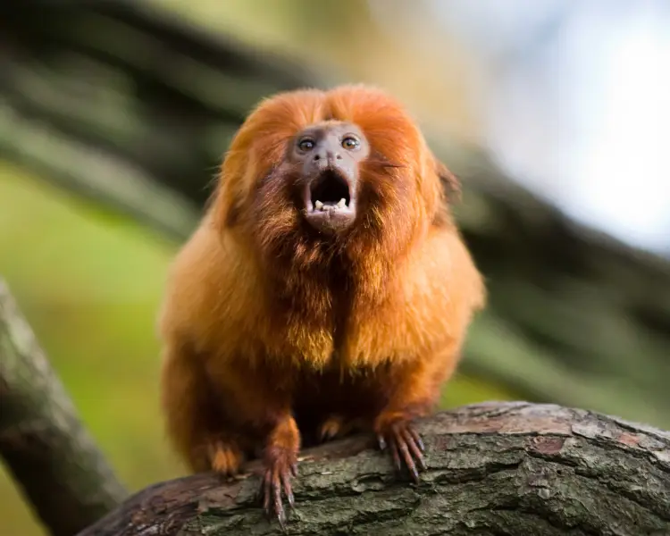
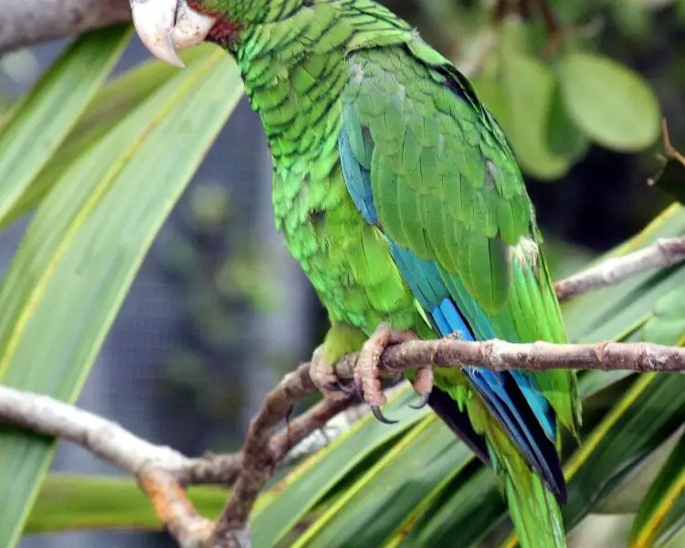
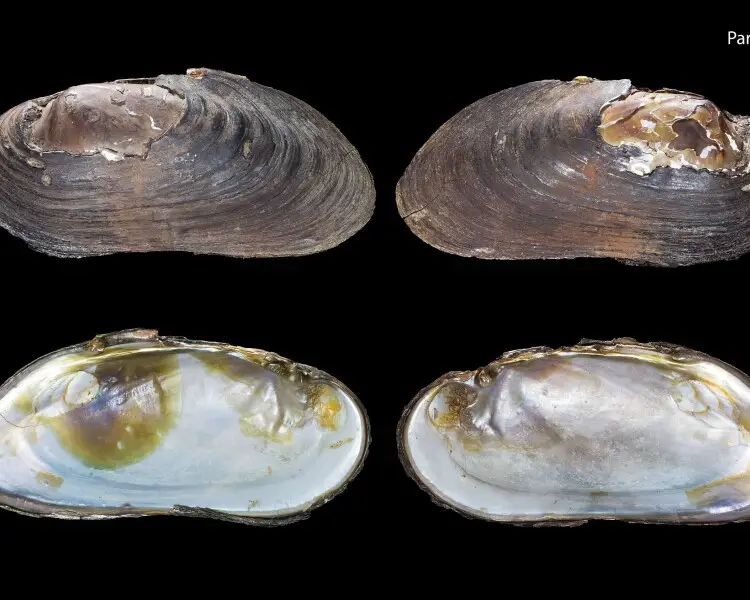
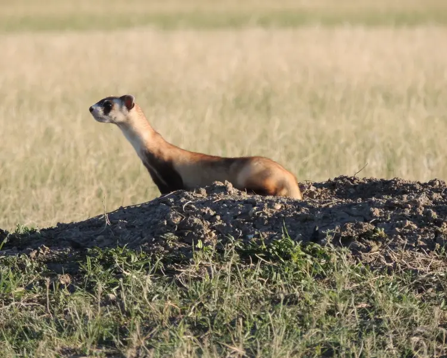
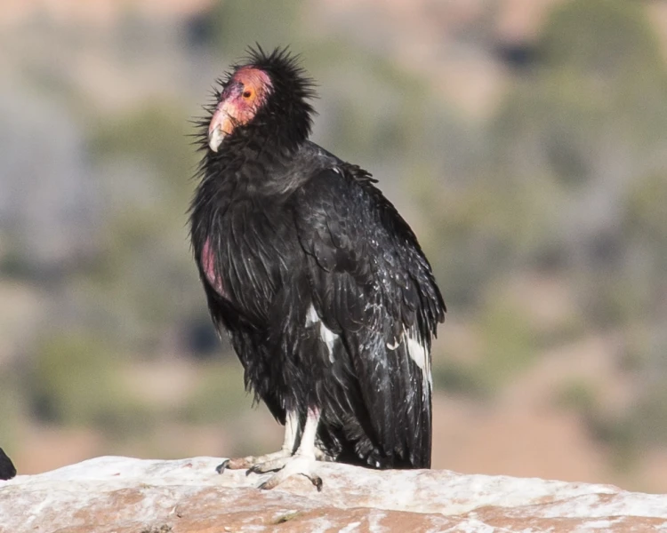
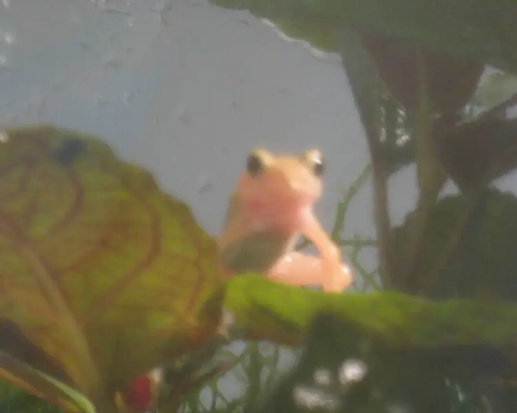
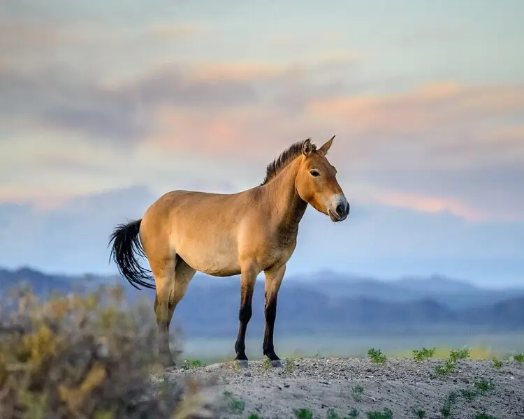

Short Brief History about the Zoo
Zoo, aquarium, natural park and variety form of zoo are among our society and humanity. Brief hystory about the zoo. Back to 2500 BCE the Egyptian king(Pharaoh), the evidence of private showed that put the wild animal as a original zoos. The zoos were later transfer into a public institution in the 1700s. The first modern zoo, build in 1973, opened in Paris, France. Since 1980s, zoos are not just keep the wild animal as for people come for entaintement. The zoos developed coordinated breeding programmes that bought the couple or dozen of animals and tried to bring back extinct animals. Below is few example of the endanered animals currently.

Arabian Oryx in Arizona

Golden Lion Tamarin in Washington, D.C

Puerto Rican Parrot in Lincoln Park Zoo

Freshwater Mussels in Columbus Zoo, Ohio

Black-Footed Ferret in Cheyenne Mountain Zoo

California Confor in San Diego Zoo

Kihansi Spray Toad in Toledo Zoo

Przewalski Horse in National Zoo, Washington, D.C
For the animal, the first benefit of maintaining zoos is have been saved the endangered species from the over hunting of human. The expanding of human push the animals to the habitat loss and eventually push animal to short out the food and starvation to dead. Modern zoos in our society have the breeding program and it is the way to keep the endangered animal not go to the edge of extinction. Example of that is the Panda. In 1980, they are offically declared as an endanered species but they bound up right now.
For the human, the benefit for human is rebuilding the ecosystem which are having bad effect to the environment by demanding of population growth. Some animals is required good for cycle of ecosystem and the lose habitat will break out the cycle system. It will slightly effect to human dailly so helping the animal, keeping the strong cycle of ecosystem is the essential work for everyone. As the traveler to the zoo, we want to see how beautiful of natural creatures. The sound from the bird, from the lion's roar, the horse running and so on. It is a part of the world our past generations, we, and next generations was living in.